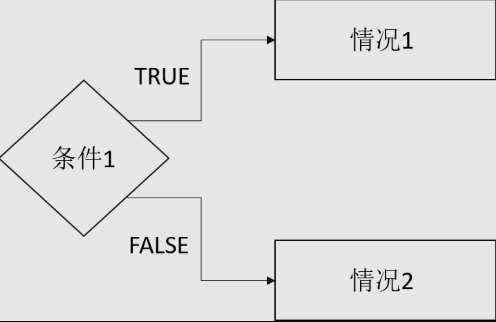

在众多编程语言中，大家都会接触到判断语句，各种条件的判断有助于我们根据不同的情况作出不同的选择，那么R又是如何在条件的十字路口作出判断呢？下面将以《R语言入门与实践》中的一个例子展开。

在R中，if语句的写法如下：
1
2
3
| if(condition){}
else if(condition){}
else {}
|
在if语句中，()内的是需要进行判断的情况， {}内的是需要执行的代码。要注意的是由于else的情况无需再进行判断，所以其后也无括号。
- 本次作为展示的例子是一个关于老虎机的函数。通过该函数的编程，我们可以清晰地认识到R中的条件判断是如何进行的。
抽奖
我们知道老虎机是根据摇出的图案组合来判断玩家是否中奖的。因此，需要先写出一个可以随机生成不同图案的函数，而且要注意各种图案出现的概率是不一样的。
1
2
3
4
5
6
7
8
9
10
| get_symbols <- function(){
wheel <- c("DD", "7", "BBB", "BB", "B", "C", "0")
sample(wheel, size = 3, replace = T,
prob = c(0.03, 0.03, 0.06, 0.1, 0.25, 0.01, 0.52))
}
> sym <- get_symbols()
> sym
[1] "B" "BB" "BB"
|
中奖
接着，就是根据图案的组合来判断中奖的金额了。需要写出一个score函数可以识别不同的情况以判定中奖的金额。中奖的情况有以下三种：
- 三个图案完全相同。
- 任意三个带有“B”的图案（BBB, BB, B）。
- 一个或多个“C”。
- 如果组合中带有“DD”，奖金倍增“DD”的数量。

将score函数的逻辑结构画出的话将是以下这样的：

score函数是如下的样子：
1
2
3
4
5
6
7
8
9
10
11
12
13
14
15
16
17
18
19
20
21
22
23
24
25
26
27
28
29
30
31
32
33
34
35
36
37
38
39
40
41
42
43
44
45
46
47
| score <- function(sym){
if(length(unique(sym))==1){
if(sym[1]=="DD"){
prize <- 100
}
else if(sym[1]=="7"){
prize <- 80
}
else if(sym[1]=="BBB"){
prize <- 40
}
else if(sym[1]=="BB"){
prize <- 25
}
else if(sym[1]=="B"){
prize <- 10
}
else {
prize <- 10
}
}
else if(sum(sym %in% c("BBB", "BB", "B"))==3){
prize <- 5
}
else {
if(sum(sym=="C")==2){
prize <- 5
}
else if(sum(sym=="C")==1){
prize <- 2
}
else {
prize <- 0
}
}
if("DD" %in% sym){
prize <- prize*2^sum(sym=="DD")
}
prize
}
|
其中，对于三个图案是否一样我们采用了unique函数进行判断，该函数会返回输入变量中的非重复值，所以当变量中所有元素一样时，unique函数只会返回一个值。理所当然，该值的长度正是1.
当然，也可以通过sym[1] == sym[2] & sym[2] == sym[3]来判断，看起来会比较直观，但是当需要判断的条件比较多的时候就会很麻烦。
最后，将两个函数整合在一起就可以愉快地玩耍了！
1
2
3
4
5
6
7
8
9
10
11
12
13
14
| play <- function(){
sym <- get_symbols()
print(sym)
prize <- score(sym)
print(paste("Your prize is", prize))
}
> play()
[1] "0" "0" "7"
[1] "Your prize is 0"
> play()
[1] "B" "B" "B"
[1] "Your prize is 10"
|
完。